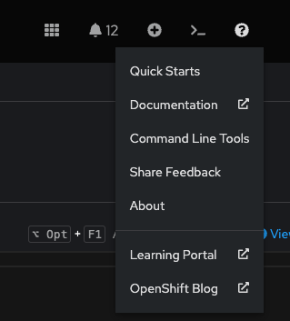
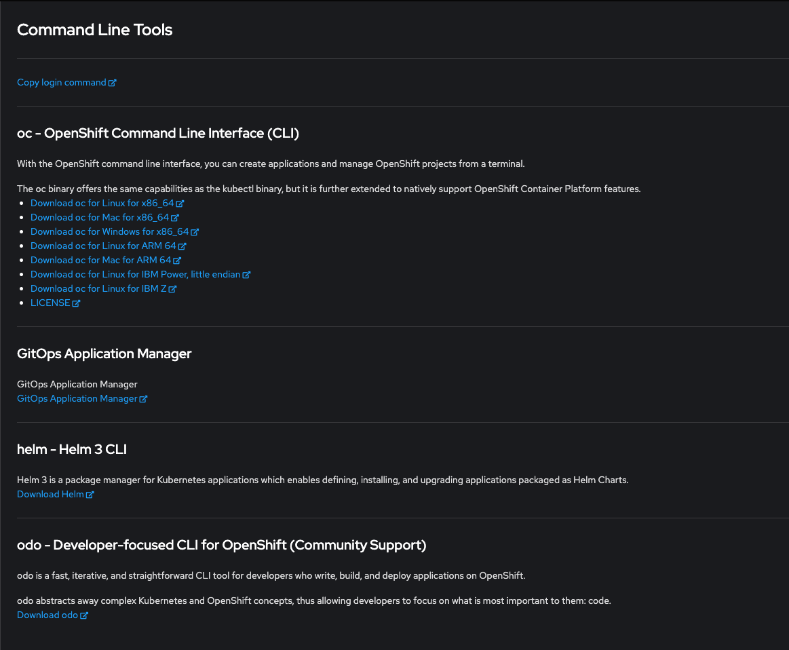

Interagir avec la Ligne de Commande sur OpenShift
Objectif de la section
L'objectif de cette section est de fournir une compréhension approfondie de l'interaction avec OpenShift via l'interface de ligne de commande (CLI). Vous apprendrez à installer et configurer les outils nécessaires, ainsi qu'à utiliser des commandes pour gérer et déployer des applications sur OpenShift. Cette section couvrira les concepts fondamentaux pour vous permettre d'exploiter pleinement les capacités de la CLI dans des environnements de développement et de production.
Introduction aux Interfaces de Ligne de Commande
OpenShift offre deux interfaces de ligne de commande principales pour la gestion des clusters et des applications : kubectl et oc. Ces outils sont utilent pour les développeurs et les administrateurs qui préfèrent ou ont besoin d'interagir directement avec leurs clusters OpenShift depuis un terminal, plutôt que par la console Web.
Kubectl et OC : Différences et Complémentarités
kubectl est l'outil de ligne de commande natif de Kubernetes. Il offre une interface pour interagir avec les clusters Kubernetes en exécutant des commandes qui communiquent avec l'API Kubernetes.
oc, quant à lui, est une extension de kubectl fournie par OpenShift. En plus des commandes de base de Kubernetes, oc inclut des fonctionnalités spécifiques à OpenShift qui ne sont pas disponibles dans kubectl. Par exemple, oc ajoute des commandes pour gérer les projets, les routes, les configurations de déploiement, et bien plus encore. En utilisant oc, les utilisateurs peuvent accéder à des capacités avancées d'OpenShift tout en conservant l'accès aux commandes standard de Kubernetes.
Installation des Outils de Ligne de Commande
Pour interagir avec OpenShift via la ligne de commande, il est nécessaire d'installer les outils kubectl et/ou oc. L'installation de oc inclut généralement kubectl, rendant ainsi l'ensemble du processus plus simple pour les utilisateurs d'OpenShift.
Installation de OC
Pour installer oc, suivez ces étapes :
-
Téléchargez le client OpenShift :
- Accédez à la console Web OpenShift.
- Cliquez sur le point d'interrogation en haut à droite et sélectionnez "Command Line Tools".

- Téléchargez l'archive du client OpenShift pour votre système d'exploitation.

-
Décompressez l'archive :
- Sous Linux ou macOS :
bash tar xvzf openshift-client-linux.tar.gz - Sous Windows, utilisez un outil de décompression comme 7-Zip pour extraire les fichiers.
- Sous Linux ou macOS :
-
Ajoutez
ocà votre PATH :- Sous Linux ou macOS :
bash sudo mv oc /usr/local/bin/
- Sous Linux ou macOS :
Authentification et Connexion
Pour interagir avec un cluster OpenShift, il est essentiel de s'authentifier correctement. OpenShift offre deux méthodes principales pour se connecter via la ligne de commande : en utilisant oc login avec les identifiants de l'utilisateur ou en utilisant la commande de connexion générée depuis la console Web.
Méthode 1 : Connexion avec oc login
- Ouvrez votre terminal.
-
Exécutez la commande
oc loginen fournissant l'URL du serveur, votre nom d'utilisateur et votre mot de passe :bash oc login https://api.ocp4.example.com:6443 Username: developer Password: developer``` Login successful.
You have access to 58 projects, the list has been suppressed. You can list all projects with 'oc projects'
Using project "default". ```
Ce message confirme une connexion réussie et vous informe que vous êtes actuellement dans le projet "default".
Méthode 2 : Connexion via la Commande Copiée de la Console Web
- Accédez à la console Web OpenShift.
- Cliquez sur votre nom d'utilisateur en haut à droite.
-
Sélectionnez "Copy login command".
-
Cliquez sur "Display Token" pour afficher le token.

-
Copiez la commande de connexion affichée.
bash oc login --token=<votre_token> --server=https://api.ocp4.example.com:6443 -
Collez et exécutez cette commande dans votre terminal.
bash oc login --token=<votre_token> --server=https://api.ocp4.example.com:6443``` Login successful.
You have access to 58 projects, the list has been suppressed. You can list all projects with 'oc projects'
Using project "default". ```
Cette méthode vous permet de vous connecter rapidement et en toute sécurité sans avoir à saisir manuellement vos identifiants.
En utilisant l'une ou l'autre de ces méthodes, vous pouvez facilement vous connecter à votre cluster OpenShift et commencer à gérer vos ressources et déployer vos applications.
Gestion des Projets
Les projets dans OpenShift sont des espaces de noms Kubernetes avec des annotations supplémentaires. Ils permettent d'isoler les ressources de votre application et de gérer des environnements distincts.
Création d'un Projet
Pour créer un nouveau projet, utilisez la commande oc new-project :
oc new-project myapp
Now using project "myapp" on server "https://api.ocp4.example.com:6443".
You can add applications to this project with the 'new-app' command. For example, try:
oc new-app django-psql-example
to build a new example application in Python. Or use kubectl to deploy a simple Kubernetes app:
kubectl create deployment hello-node --image=k8s.gcr.io/serve_hostname
Ce message indique que le projet "myapp" a été créé avec succès et vous donne des suggestions pour ajouter des applications à ce projet.
Commandes pour la Gestion des Ressources
Les commandes oc et kubectl offrent un ensemble de fonctionnalités pour la gestion des ressources dans OpenShift. Voici quelques-unes des commandes les plus utilisées :
Afficher les Ressources
- Lister les pods :
oc get pods
NAME READY STATUS RESTARTS AGE
myapp-1-abcde 1/1 Running 0 5m
myapp-2-abcde 1/1 Running 0 3m
Ce tableau montre les noms des pods, leur état de préparation, leur statut, le nombre de redémarrages, et leur âge.
- Afficher les détails d'un pod spécifique :
oc describe pod <nom_du_pod>
Name: myapp-1-abcde
Namespace: myapp
Node: worker-1/192.168.1.101
Start Time: Fri, 15 Jul 2023 10:15:00 +0000
Labels: app=myapp
Status: Running
IP: 10.129.2.1
Containers:
myapp:
Container ID: docker://abcdef12345
Image: myapp:latest
Image ID: docker-pullable://myapp@sha256:123456789abcdef
Port: 8080/TCP
State: Running
Ready: True
Cette sortie fournit des informations détaillées sur le pod, y compris ses conteneurs, l'ID de l'image, l'adresse IP, et l'état actuel.
Créer et Supprimer des Ressources
- Créer une ressource à partir d'un fichier YAML :
oc create -f pod.yaml
pod/myapp-3-abcde created
Ce message confirme que le pod spécifié dans le fichier "pod.yaml" a été créé avec succès.
- Supprimer une ressource :
oc delete pod <nom_du_pod>
pod "myapp-1-abcde" deleted
Ce message confirme que le pod "myapp-1-abcde" a été supprimé avec succès.
Vérifier l'État du Cluster
- Obtenir des informations sur le cluster :
oc cluster-info
Kubernetes master is running at https://api.ocp4.example.com:6443
KubeDNS is running at https://api.ocp4.example.com:6443/api/v1/namespaces/kube-system/services/kube-dns:dns/proxy
Cette sortie montre l'URL du serveur API principal de Kubernetes ainsi que l'adresse du service DNS du cluster.
Déploiement d'Applications
OpenShift facilite le déploiement d'applications à travers une série de commandes simples. Voici quelques commandes clés pour déployer des applications.
Création d'une Nouvelle Application
- Créer une nouvelle application :
oc new-app <image>
#oc new-app nginx
--> Found image 64b0af3 (9 days old) in image stream "openshift/nginx" under tag "latest" for "nginx"
* An image stream tag will be created as "nginx:latest" that will track this image
* This image will be deployed in deployment config "nginx"
* Port 8080/tcp will be load balanced by service "nginx"
* Other containers can access this service through the hostname "nginx"
--> Creating resources ...
imagestream.image.openshift.io "nginx" created
deploymentconfig.apps.openshift.io "nginx" created
service "nginx" created
--> Success
Ce message indique que l'application basée sur l'image "nginx" a été créée avec succès, avec les ressources associées comme le flux d'image, la configuration de déploiement, et le service.
Exposition d'un Service
Pour rendre votre application accessible de l'extérieur du cluster, vous pouvez exposer un service en créant une route.
- Exposer un service :
oc expose svc/<nom_du_service>
#oc expose svc/nginx
route.route.openshift.io/nginx exposed
Ce message confirme que le service "nginx" a été exposé avec succès, ce qui signifie qu'une route a été créée pour permettre l'accès externe à l'application.
Mise à Jour des Applications
Les applications nécessitent souvent des mises à jour pour déployer de nouvelles versions ou appliquer des correctifs.
Mise à Jour d'une Image de Déploiement
- Mettre à jour une image de déploiement :
oc set image dc/<nom_du_deploymentconfig> <nom_du_container>=<nouvelle_image>
#oc set image dc/nginx nginx=nginx:latest
deploymentconfig.apps.openshift.io/nginx image updated
Ce message indique que l'image du conteneur dans la configuration de déploiement "nginx" a été mise à jour avec succès.
Surveillance des Applications
Une fois vos applications déployées, il est important de surveiller leur état pour s'assurer qu'elles fonctionnent correctement.
Afficher les Logs d'un Pod
- Afficher les logs :
oc logs <nom_du_pod>
#oc logs myapp-1-abcde
[INFO] Starting nginx...
[INFO] nginx is running.
Ces logs fournissent des informations sur l'état du pod et les opérations effectuées par le conteneur.
Exécution de Commandes dans un Pod
Pour diagnostiquer des problèmes ou administrer des applications, il peut être nécessaire d'exécuter des commandes directement dans un pod.
- Exécuter une commande dans un pod :
oc exec <nom_du_pod> -- <commande>
#oc exec myapp-1-abcde -- ls /app
index.html
main.js
style.css
Cette sortie montre les fichiers dans le répertoire /app du pod, aidant ainsi à vérifier que les fichiers nécessaires sont présents.
Tableau des Commandes Principales OpenShift
| Commande | Description | Exemple |
|---|---|---|
| Installation et Configuration | ||
oc login <server> |
Authentifie et connecte à un cluster OpenShift | oc login https://api.ocp4.example.com:6443 |
| Gestion des Projets | ||
oc new-project <nom_du_projet> |
Crée un nouveau projet | oc new-project myapp |
| Gestion des Ressources | ||
oc get pods |
Liste tous les pods dans le projet actuel | oc get pods |
oc describe pod <nom_du_pod> |
Affiche les détails d'un pod spécifique | oc describe pod myapp-1-abcde |
oc create -f <fichier_yaml> |
Crée une ressource à partir d'un fichier YAML | oc create -f pod.yaml |
oc delete pod <nom_du_pod> |
Supprime un pod spécifique | oc delete pod myapp-1-abcde |
oc cluster-info |
Affiche des informations sur le cluster | oc cluster-info |
| Déploiement d'Applications | ||
oc new-app <image> |
Crée une nouvelle application basée sur une image | oc new-app nginx |
oc expose svc/<nom_du_service> |
Expose un service pour permettre l'accès externe à l'application | oc expose svc/nginx |
| Mise à Jour des Applications | ||
oc set image dc/<nom_du_deploymentconfig> <nom_du_container>=<nouvelle_image> |
Met à jour l'image d'un déploiement | oc set image dc/nginx nginx=nginx:latest |
| Surveillance des Applications | ||
oc logs <nom_du_pod> |
Affiche les logs d'un pod | oc logs myapp-1-abcde |
oc exec <nom_du_pod> -- <commande> |
Exécute une commande dans un pod | oc exec myapp-1-abcde -- ls /app |
| Gestion des Routes et Services | ||
oc get routes |
Liste toutes les routes dans le projet actuel | oc get routes |
oc delete route <nom_de_la_route> |
Supprime une route spécifique | oc delete route myapp-route |
oc get svc |
Liste tous les services dans le projet actuel | oc get svc |
oc delete svc <nom_du_service> |
Supprime un service spécifique | oc delete svc myapp-service |
| Autres Commandes Utiles | ||
oc get all |
Liste toutes les ressources dans le projet actuel | oc get all |
oc rollout status dc/<nom_du_deploymentconfig> |
Affiche le statut du déploiement | oc rollout status dc/nginx |
oc scale --replicas=<nombre> dc/<nom_du_deploymentconfig> |
Change le nombre de réplicas d'un déploiement | oc scale --replicas=3 dc/nginx |
oc rollout undo dc/<nom_du_deploymentconfig> |
Annule le dernier déploiement | oc rollout undo dc/nginx |
oc get events |
Liste tous les événements dans le projet actuel | oc get events |
Conclusion
L'utilisation de la ligne de commande avec OpenShift, via kubectl et oc, offre une flexibilité considérables pour gérer des clusters et des applications. En comprenant les commandes essentielles et en apprenant à interpréter leurs sorties, vous serez bien équipé pour administrer efficacement vos environnements OpenShift, déployer des applications, gérer des ressources et diagnostiquer des problèmes. La maîtrise de ces outils est essentielle pour tout professionnel travaillant dans un environnement Kubernetes/OpenShift, offrant ainsi un contrôle granulaire et des capacités avancées pour une gestion optimale des infrastructures cloud-native.